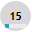

The side panel
The side panel appears at the right side of SuperOffice CRM. The panel is available in all screens except for the Inbox.
It works as a window to relevant information in SuperOffice CRM. You can choose from a number of different views by clicking the arrow ( ) to the right of the side panel's view name.
) to the right of the side panel's view name.
Tip
You can hide or show the side panel by clicking these buttons above the side panel: 
The side panel is useful for showing information complementary to the screen you are in. For example, you can display the monthly calendar at the same time as you are viewing the daily calendar in the Diary screen, to give you a better overview, or you can show the members of a selection linked to a project you are looking at in the Project screen.
Tip
You can also add custom views to the side panel, from SuperOffice Settings and Maintenance.
The default setting is for the side panel to show a preview of the selected record. Once you have selected a view in a tab in a screen, SuperOffice CRM remembers this the next time the same tab is displayed.
Company
Shows a summary of information about the current company in the Company screen.
Tip
If you want to view other companies, without having to switch companies in the Company screen, you can use the history list, which you bring up by clicking the arrow (  ) next to the company name.
) next to the company name.
Contact
Shows information about the contact selected in the Company or Selection screen.
Tip
If you click the contact's name, the contact card opens, and here you can view and edit detailed information about the contact.
Why is the side panel empty?
In a dynamic selection, you can choose to show companies only, without specifying a contact. If Include main contact is not checked in the dynamic selection, no information will be displayed in the Contact view for the side panel, even if you have selected a contact.
Day
Shows a day's agenda which works in the same way as the Day tab in the Diary screen
Note
You can only show your own diary in the side panel. If you want to view other people's diaries, you can do this in the Diary screen.
Next day
Show a daily agenda for the next day. This works in the same way as the Day view.
Week
Shows a weekly agenda, giving you an overview of follow-ups for the current week.
Month
Shows a monthly agenda, giving you an overview of follow-ups for the next month(s). You can expand the side panel to show multiple months.
If you hold the mouse pointer over these days, a tooltip containing a list of the relevant follow-ups appears.
| Icon | Description |
|---|---|
| The "bar" below the date indicates the level of activities that day, making it easier to schedule meetings. | |
|  | Today. |
| The selected date in the Diary. |
You can move from month to month by clicking the arrow keys ( 
 ) at the bottom of the side panel.
) at the bottom of the side panel.
My favorites
Shows all your favourites.
- To view only favourites for the current screen, click the checkbox at the bottom of the side panel. Example: If the Sale screen is open, click Sales only to show only sales.
- To remove favourites, select one or more favourites in the list and click Remove.
- Click Refresh to update the list of favourites with any new favourites you have added.
- Right-click a favourite to open the context menu.
Notepad
Opens the Notepad in the side panel.
Preview
Shows a preview of a selected activity, project, contact, project member or selection member in the side panel. Depending on the selected item, the window may contain links to contacts and activities. Clicking one of these links, opens the contact card, Document dialog, or follow-ups dialog, where you can view and edit the contact or activity.
Project
Shows a summary of information about the current project in the Project screen.
Tip
If you want to view other projects, without having to switch projects in the Project screen, you can use the history list, which you bring up by clicking the arrow (  ) next to the project name.
) next to the project name.
Project members
Shows a list of project members in the current project in the Project screen.
Tip
If you double-click the name of a project member, the contact card opens, and here you can view and edit detailed information about the project member.
Sale
Shows a summary of information about the current sale in the Sale screen.
Tip
If you want to view other sales, without having to switch sales in the Sale screen, you can use the history list, which you bring up by clicking the arrow (  ) next to the name of the sale.
) next to the name of the sale.
Selection
Shows a summary of information about the current selection in the Selection screen.
Tip
If you want to view other selections, without having to switch selections in the Selection screen, you can use the history list, which you bring up by clicking the arrow (  ) next to the selection name.
) next to the selection name.
Selection members
Shows a list of members of the current selection in the Selection screen.
Tip
If you are in the Diary screen and select a date in the different week in the diary, the week view changes to the week the selected date is in.
User-defined views
In SuperOffice Settings and maintenance, you can also define your own views for the side panel. This is described in more detail in the SuperOffice Settings and maintenance help.